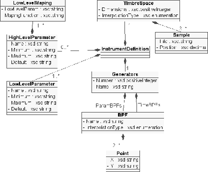
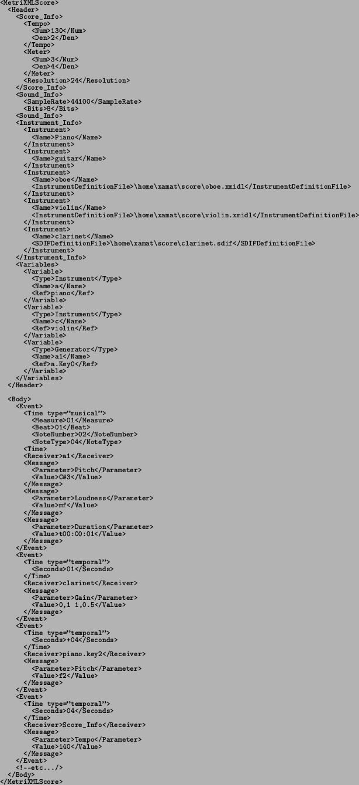
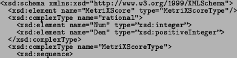
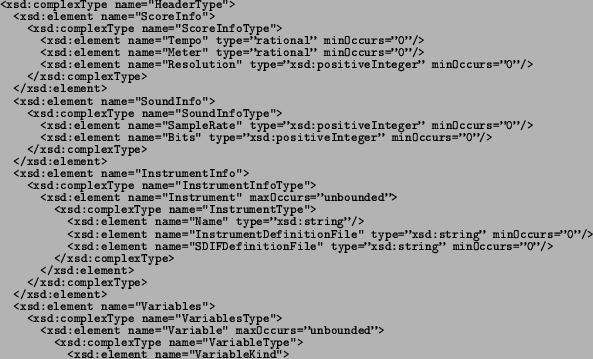

Next: Summary and Conclusions Up: MetriX in XML= MetriXML Previous: MetriXML Instrument Definition
We can do the same process transforming the textual MSDL (see 6.4.3)
into XML:

And we can now build the associated XML-Schema:

<xsd:element name="Header">

<xsd:simpleType=''VariableKindType''>
<xsd:restriction base=''xsd:string''>
<xsd:enumeration value=''Instrument''/>
<xsd:enumeration value=''Generator''/>

</xsd:simpleType>
<xsd:element name="Name" type=''xsd:string''/>

And as we did for the Instrument Definition, by looking at the previous schema we can now build the object-oriented class diagram of the MetriXML Score. This class diagram is illustrated in Figure 6.13.